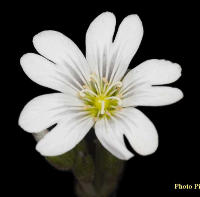
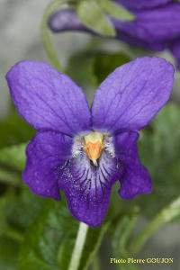
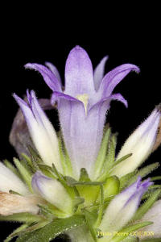
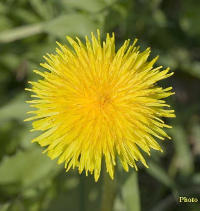
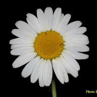

Fleurs
à pétales séparés
Il
s’agit de fleurs dont les pétales sont séparés jusqu'à la base.
On peut les enlever un à un sans les déchirer. Il y en a deux types
:
|
pétales
séparés et égaux : les pétales sont tous semblables (même
taille et aspect), disposés régulièrement, généralement de
manière rayonnante (symétrie radiale, fleurs actinomorphes). Ex
: céraiste des champs
|

|
|
pétales
séparés et inégaux : les pétales diffèrent les uns des autres
par leur taille ou leur aspect. La corolle obéit alors à une
symétrie bilatérale (fleurs zygomorphes). Les orchidées et les
fleurs papilionacées appartiennent à cette catégorie. Ex :
violette odorante
|

|
Fleurs
à pétales soudés
Il
s’agit de fleurs dont les pétales sont soudés, au moins à la
base. On ne peut en enlever un sans déchirer la corolle. Là encore,
il y a deux types :
|
pétales
soudés, lobes égaux (symétrie radiale) : les extrémités des
pétales soudés forment des lobes égaux et régulièrement
disposés. Ex : toute la famille des campanules
|

|
|
pétales
soudés, lobes inégaux (symétrie bilatérale) : les extrémités
des pétales soudés forment des lobes inégaux, donnant une forme
irrégulière à la corolle, qui prend souvent l’apparence d’un
tube à une ou deux lèvres. Ex : calament des bois.
|

|
Fleurs
composées
Dans
une fleur composée, ce qu’on appelle ordinairement une fleur est
composé de plusieurs petites fleurs serrées dans le même
réceptacle (on appelle l’ensemble capitule). Il y en a deux types
:
|
les
fleurs composées dont les petites fleurs sont toutes tubulées
(prenant l’aspect d’un tube minuscule) ou toutes ligulées
(prenant l’aspect de petites languettes). Le pissenlit est un
exemple de capitule aux fleurs toutes ligulées, et la centaurée
jacée un exemple de capitule aux fleurs toutes tubulées.
|

|
|
les
fleurs composées à la fois de fleurs tubulées et de fleurs
ligulées. L’exemple type est la marguerite, qui réunit des
fleurs tubulées (partie jaune, au centre) et des fleurs ligulées
(les languettes blanches, semblables à des pétales, qui rayonnent
autour du centre jaune)
|

|